Libros con portada
Organiza las recetas en libros: el de tu madre, el de un amigo o uno por temas.
- Fija tus libros favoritos arriba
- Recetas agrupadas por categoría
- Desliza para pasar de receta como las páginas de un libro
Miga guarda las recetas de tu familia en libros con su portada, te acompaña paso a paso mientras cocinas y organiza la compra por los pasillos de tu supermercado. Sin cuentas, sin anuncios y con todo guardado en tu móvil.
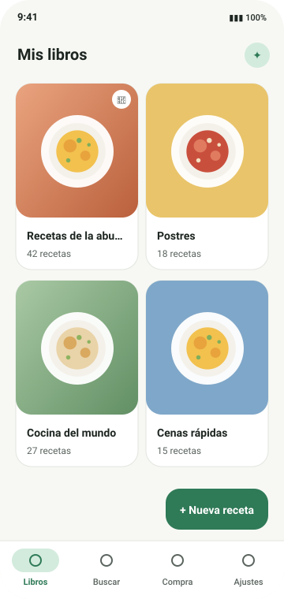
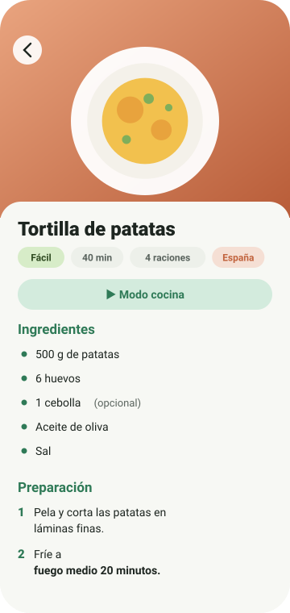
Miga no tiene servidores propios ni te pide registrarte. Lo que guardas es tuyo y se queda en tu teléfono.
Recetas, fotos, listas y ajustes se guardan en el teléfono. Funciona sin conexión.
Ni registro, ni publicidad, ni analítica. Abres la app y empiezas a cocinar.
Internet solo se usa para lo que activas: tu asistente, Open Food Facts, packs o tu servidor.
Licencia GPL-3.0. Puedes revisar el código, compilarlo y proponer mejoras.
Elige una parte de la app para ver qué puede hacer por ti.
Crea un libro para cada persona o cada tema, cada uno con su portada, y llena sus páginas con recetas completas.
Los pasos uno a uno, en grande y sin que se apague la pantalla.
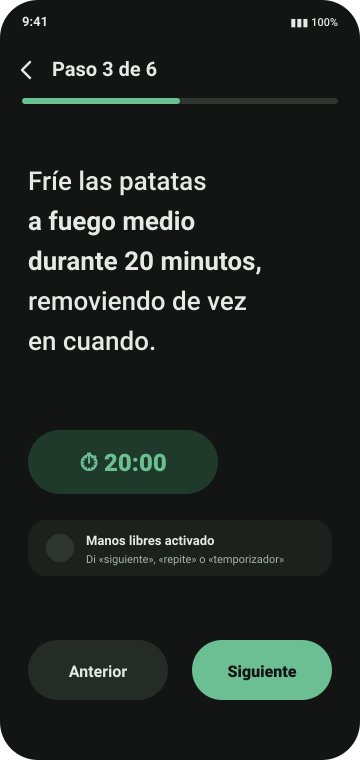
Añade lo que falta escribiendo, dictando, escaneando o desde una receta, y recórrela por pasillos.
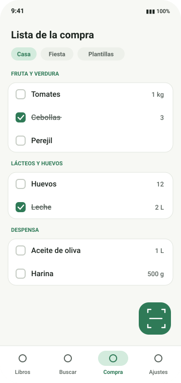
Escanea el código de barras y consulta la ficha del producto con los datos abiertos de Open Food Facts.
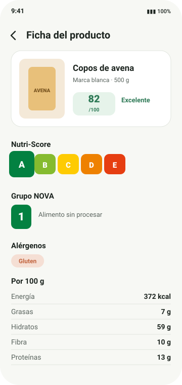
Funciones opcionales con inteligencia artificial y tu propia clave. Si no lo configuras, no se envía nada.
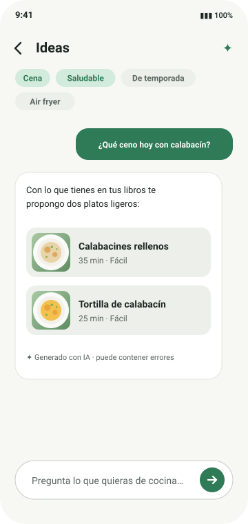
Conecta Miga a un servidor que alojes tú y comparte libros y la lista de la compra entre varios móviles.
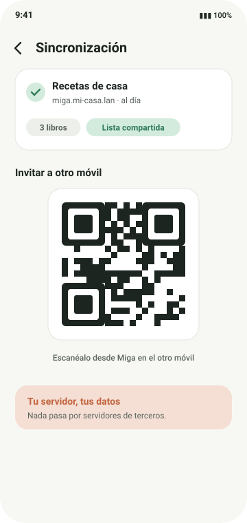
Una app completa para la cocina de casa, explicada sin letra pequeña.
Organiza las recetas en libros: el de tu madre, el de un amigo o uno por temas.
Encuentra cualquier receta en todos tus libros por nombre o ingrediente.
Escribir una receta es rápido: la app te sugiere lo que ya has usado.
Recorta, gira y mejora tus fotos, que se guardan con el tamaño justo.
Los pasos en grande y la pantalla siempre encendida.
Desde una receta añades todos sus ingredientes de una vez.
Escanea códigos de barras para añadir productos y ver su ficha.
Trae recetas de donde estén.
Comparte una receta o un libro entero en el formato que necesites.
Guarda toda tu biblioteca en un archivo y restáurala cuando quieras.
Que Miga se vea como te gusta.
Tus recetas, solo para ti.
Las funciones marcadas con ✨ usan inteligencia artificial con la clave que tú configures. Eliges el proveedor y el modelo, y Miga solo envía lo necesario para cada tarea.
Si añades varios, se usan en el orden que elijas: si uno falla, se prueba el siguiente.
Para compartir libros y la lista de la compra en familia, Miga se conecta a un servidor que alojas tú. Es ligero, funciona con Docker y trae una web de administración muy completa.
.env.example a .env, pon un token de administrador y ejecuta docker compose up -d.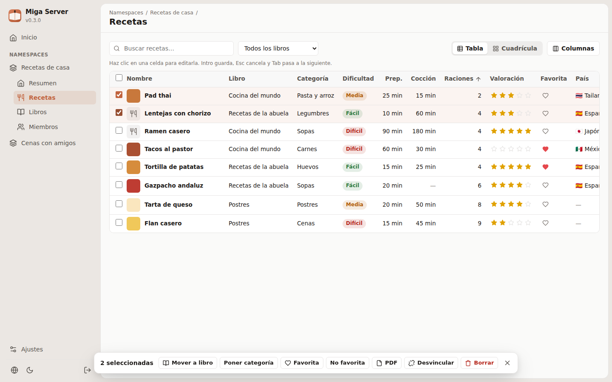
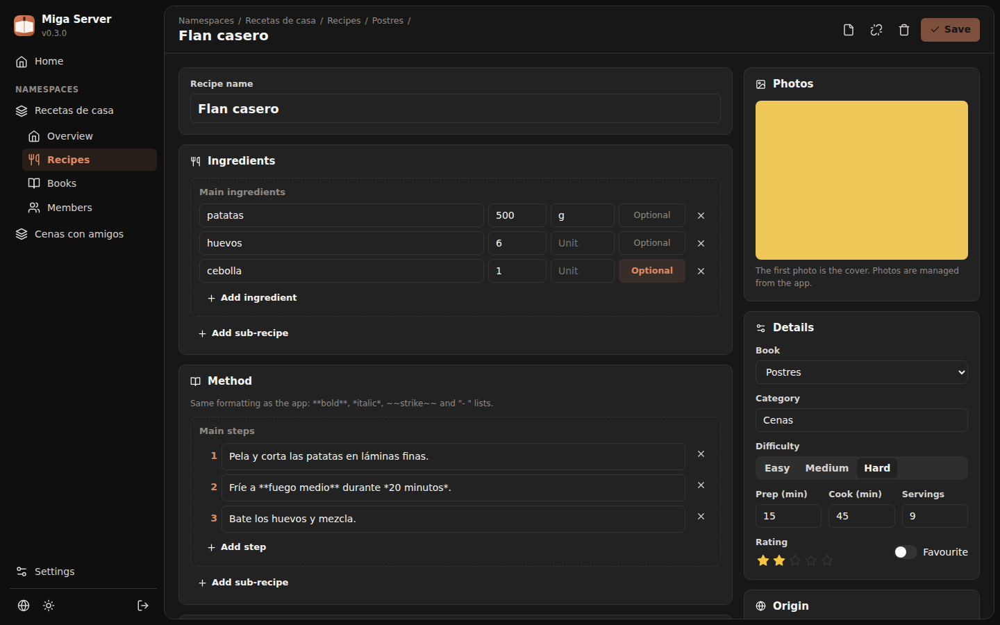
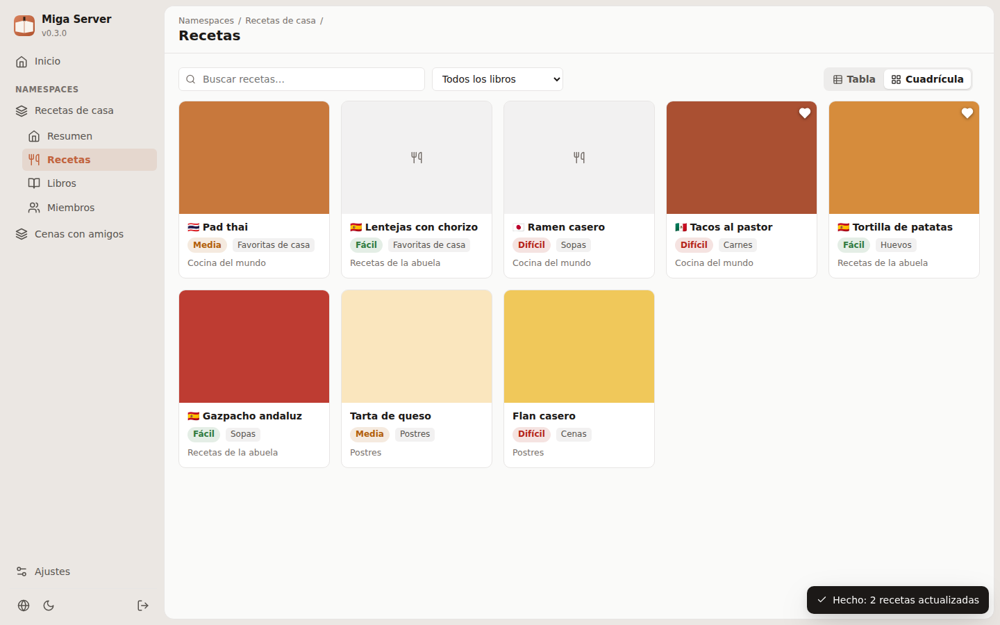
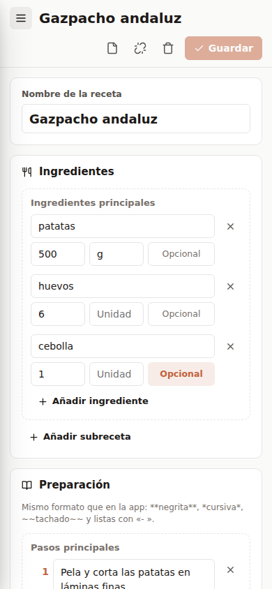
cada namespace lo comparten los móviles que tú decidas, con un token por dispositivo que puedes revocar.
libros, recetas, fotos y listas, con «la última edición gana» aunque los relojes no coincidan.
edita recetas en una tabla como en una hoja de cálculo, cambia muchas a la vez o usa el editor completo.
descarga una receta o un libro entero con el mismo diseño que la app, en español o inglés.
una copia diaria con rotación, y copias y descargas con un clic.
una sola imagen Docker con SQLite; ponla detrás de un proxy con TLS para usarla fuera de casa.
Un pack es un libro de recetas que se instala con un toque desde Ajustes › Packs de recetas. Sus recetas no se editan, pero puedes copiar las que quieras a tus libros.
catalog.json.Ejemplo de catalog.json
{
"schemaVersion": 1,
"packs": [
{
"id": "cocina-de-la-abuela",
"name": "Cocina de la abuela",
"author": "Ana",
"authorGithub": "ana",
"description": "Guisos, potajes y postres de siempre.",
"coverImageUrl": "covers/abuela.jpg",
"latestVersion": 1,
"recipeCount": 24,
"downloadUrl": "zips/abuela.zip"
}
]
}Sí. Es gratuita y de código abierto (GPL-3.0), sin anuncios ni compras dentro de la app.
No. Todo funciona sin conexión y sin registrarte. Internet solo se usa para las funciones que eliges: el asistente con tu clave, Open Food Facts, el catálogo de packs y tu servidor.
Depende del proveedor que elijas. Con OpenRouter hay modelos gratuitos; con Gemini, Claude u OpenAI pagas a ellos según tu uso. Miga no cobra nada ni ve tus datos.
En el almacenamiento interno de tu móvil. Si usas la sincronización, también en tu propio servidor. Miga no tiene servidores propios.
Sí: con una copia de seguridad completa (opcionalmente cifrada), exportando libros como archivo de Miga o con la sincronización.
De momento Miga es solo para Android (8.0 o superior).
Al escanear un código o buscar un producto se envía ese código o ese texto a Open Food Facts para obtener su ficha. Los datos son abiertos (licencia ODbL).
Descarga Miga, crea tu primer libro y guarda esa receta que siempre te piden.